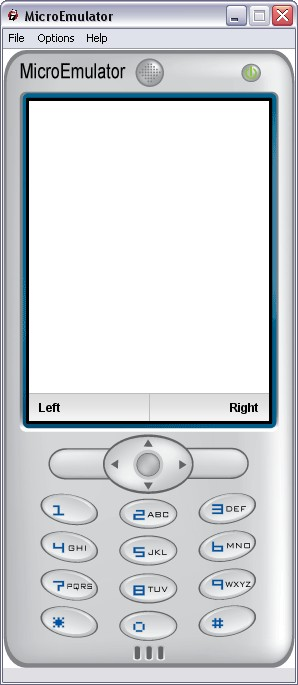

MenuBar prototype

Display a menu with two elements associate to softkeys.
Set an empty label disable the InputSensor, then, the key associated action.
Data fields
- MFString leftLabel - Left label
- MFString rightLabel - Right label
- SFBool enable - enable/disable MenuBar Buttons
Style fields
- SFVec2f screenSize - Size of the screen where the application is displayed
- SFVec2f textScale - Use for scaling text if necessary (phone with small fonts)
- MFString images - List of images for background, left overlay, right overlay
- MFString style - Style to use for this prototype (Default: MenuBar)
- MFString labelStyle - Style to use for the labels (Default: MenuBar-label)
Event Out
- SFTime leftButtonClicked - time when push left button
- SFTime rightButtonClicked - time when push right button
Menu